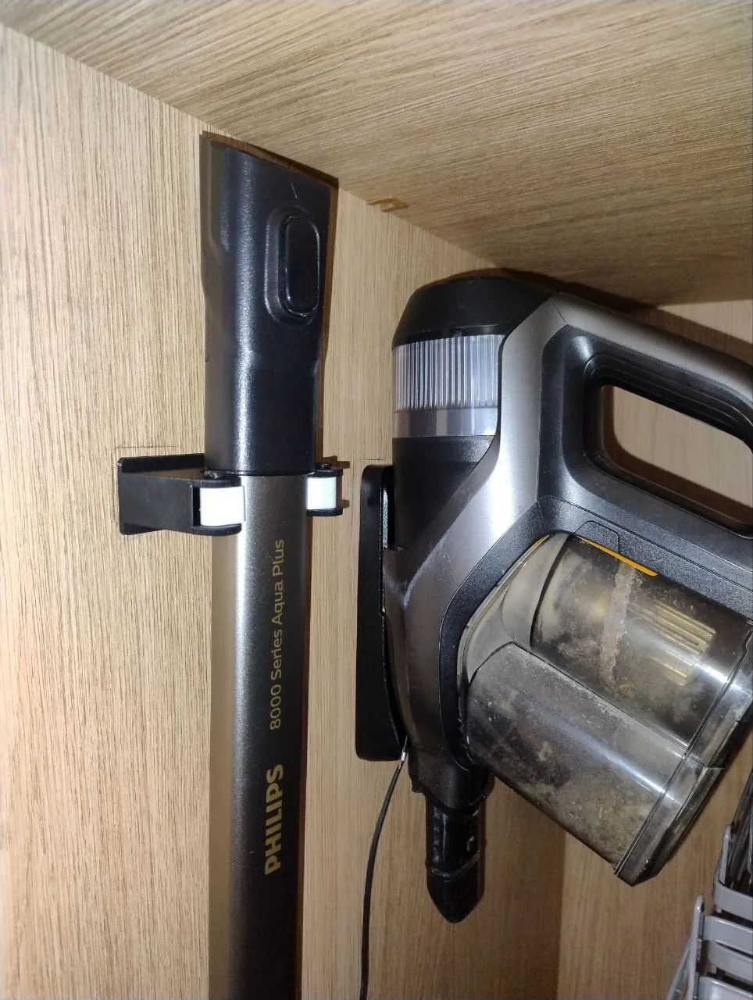
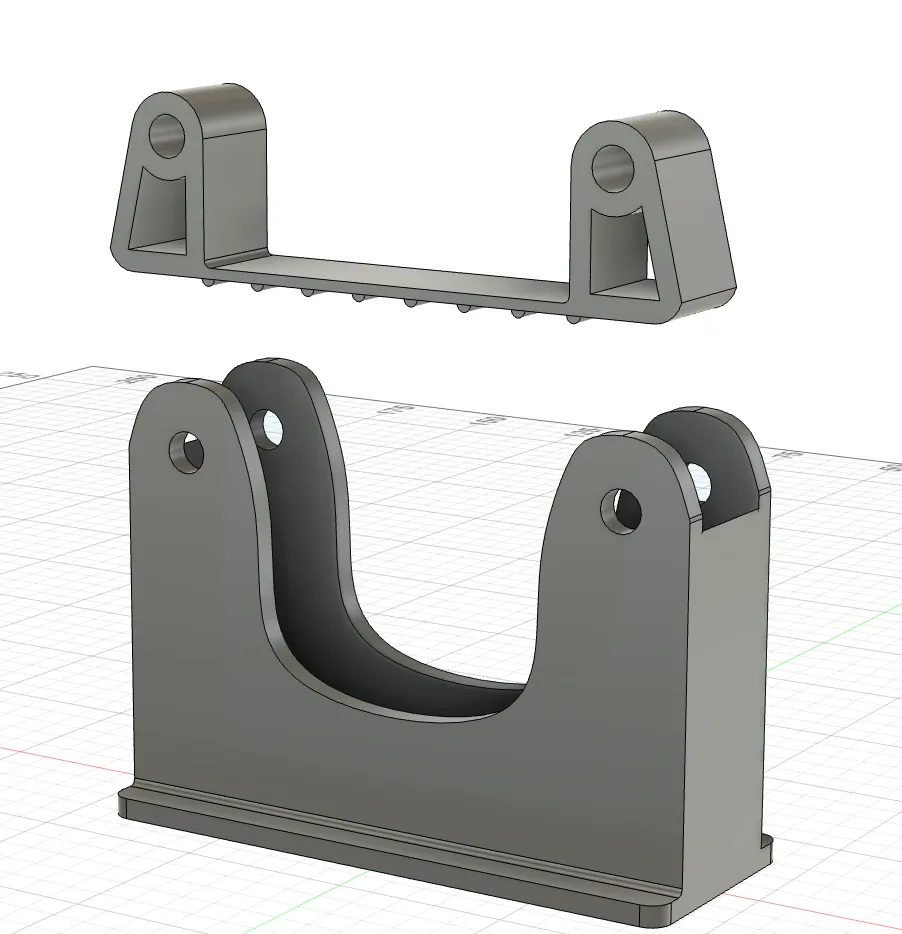
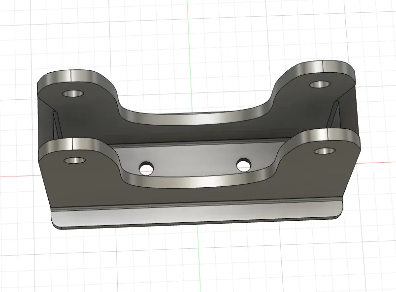
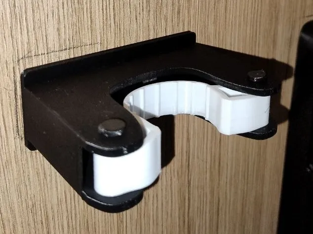

Акумуляторний пилосос Philips 8000 Series Aqua Plus — зручна річ для швидкого прибирання, але конкретно у нас у шафі просто не вистачає висоти, щоб зберігати його у повністю зібраному вигляді разом із трубою. Моторний блок чудово висить на штатній базі, а от довгу алюмінієву трубу з насадкою доводиться від’єднувати й паркувати на стінці поруч.
Готові кліпси для швабр та універсальні настінні тримачі з магазинів для нього не підходять:
- Специфічний овал труби: поперечний переріз становить 42.5 × 32 мм, тоді як стандартні тримачі розраховані на круглі живці 25–30 мм.
- Ризик пошкодити покриття: жорсткі пружинні затискачі або гострі пластикові кліпси миттєво дряпають анодований алюміній.
- Крихкість монолітних snap-fit кріплень: надруковані з одного тільки PETG чи PLA пружні пелюстки з часом втомлюються, розгинаються або тріскаються по шарах друку під час постійного вставляння/виймання.
Тому я взяв за основу вдалу концепцію тримача для швабр під рейку Everbilt і модифікував її у Fusion 360 під необхідну ширину та овальну форму труби: розширив основу з PETG і переробив еластичний TPU-ремінець із потрібним натягом.
- Модель на MakerWorld: Vacuum tube holder for Phillips 8000 Aqua Plus (Model 2871355)
- Джерело натхнення: кліпса для рейки Everbilt (Printables 1214566)

1. Заміри та геометрія труби
Перед моделюванням зняв штангенциркулем ключові розміри труби пилососа та монтажного місця:
| Параметр | Розмір | Примітка |
|---|---|---|
| Ширина труби | 42.5 мм | Поперечний овал металевої частини (ложе кронштейна ~44.8 мм із зазором) |
| Глибина труби | 32.0 мм | Товщина профілю (глибина посадкового сідла ~32.5 мм) |
| Максимальний отвір | 50.0 мм | Просвіт між «губками», щоб труба не випадала вперед при відкритому ремінці |
| Міжосьова відстань отворів | 30.0 мм | Компактна відстань між центрами кріпильних отворів (отвори на X = ±15 мм) |
| Діаметр отворів під гвинти | 4.5 мм | Під конічні саморізи 3.5–4.0 мм або гвинти M4 (товщина стінки 3.0 мм) |
| Довжина натягу TPU | ~15–20 мм | Ремінець коротший за дугу обхвату для пружного притискання |
2. Конструкція у Fusion 360 (версія v9)
Проєкт пройшов кілька ітерацій підгонки (фінальний файл — bracket-v9), поки посадка не стала щільною і приємною на дотик:

Конструкція складається з трьох простих елементів:
- Опорний кронштейн (PETG):
- Має U-подібне ложе, яке точно повторює радіус труби Philips 8000.
- На задній опорній базі — два отвори діаметром 4.5 мм з міжосьовою відстанню 30 мм (товщина монтажної стінки 3 мм, викрутка вільно проходить через відкриту порожнину кронштейна).
- На передніх краях — вушні петлі з наскрізними отворами для штифтів (зовнішня ширина кронштейна 89 мм).
- Еластичний ремінець-фіксатор (TPU 95A):
- Друкується пласко на столі.
- Має на кінцях вушка під осі, а на внутрішній робочій поверхні — рифлені ребра (gripping ribs), які надійно схоплюють метал і не дають трубі ковзати вгору-вниз.
- Довжина розрахована так, щоб ремінець злегка розтягувався при вставлянні труби й фіксував її з м’яким клацанням.
- Штифти-піни (PETG, 2 шт.):
- Циліндричні шпильки ⌀4 мм довжиною 25 мм з капелюшком. Вставляються зверху крізь вушка корпусу та ремінця, повністю замінюючи металеві болти та гайки.

3. Налаштування 3D-друку (Bambu Lab A1 mini)
Модель розбита на 2 друковані столи у файлі проєкту .3mf:
- Стіл 1 (Rubber / TPU):
- Матеріал: Generic TPU (95A).
- Заповнення: 100% (ремінець має працювати на розтяг і бути суцільним).
- Швидкість друку: знижена (30–40 мм/с) для чистого спікання шарів та гладких вушок.
- Стіл 2 (Plastic / PETG):
- Матеріал: PETG (для міцності та пружності на злам).
- Стінки (perimeters): 4 периметри для міцності вушок під штифти.
- Заповнення: 25% (Grid або Gyroid).
- Орієнтація штифтів: горизонтально з підтримками або вертикально з бримом для точного діаметра.
4. Результат та експлуатація
Кронштейн прикручений до стінки шафи двома саморізами. Чорний PETG-корпус забезпечує структурну міцність, а білий еластичний TPU-ремінець м’яко пружинить, обхоплює трубу й надійно утримує інструмент.

Труба фіксується і знімається однією рукою одним рухом. Жодних люфтів і жодних подряпин на покритті пилососа.